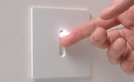
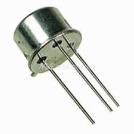
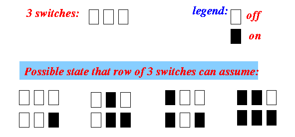
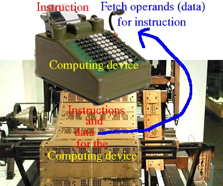

- A memory device is a gadget
that helps you
record information
and recall
the information at some later time.
Example:
- Requirement of a memory device:
- A memory device
must have more than 1 states
(Otherwise, we can't tell the difference)
Example:
Memory device in state 0 Memory device in state 1 - A memory device
must have more than 1 states
- Fact:
- Computers (electronical device) must use an electronal memory device
- The memory device used
by computers is:
- An electrical switch:
 Actually, the electrical switch used by the computer consists of a circuit made up of transistors:
 Because you're familiar with how a wall switch works, I used that to help you understand the operation of a transistor switch...
- An electrical switch:
- A memory device is:
- a device that can retain a value (= state) over time
- The electrical switch can be
in one of these
2 states:
- off state
- In computer science (nerds who love numbers), we represent the off state with the digit 0
- on state
- We represent the on state with the digit 1
- off state
- Memory function of a
switch:
- A switch in the off state will retain (= remember) the value 0
- A switch in the on state will retain (= remember) the value 1
- One switch can
retain (= remember)
a value in the
range:
0 .. 1This range of values is too small to be of much use....
- A row of n switches:

can be in one of 2n states !
- Example: a row of 3 switches
 can be in one of these 23 = 8 state:
000 010 100 110 001 011 101 111
- Binary digit:
- Binary digit =
the digit
0 or 1
(In contrast, the digits 0,1,2,3,4,5,6,7,8,9 are called: decimal digits)
- Binary digit =
the digit
0 or 1
- Bit memory (or "bit" for short):
- Bit (=
Binary
digit) =
a memory device that
can retain (= remember)
a binary digit
I.e.: a bit can remember one of the two values {0 or 1}.
In other words: an electrical switch !!!
- Bit (=
Binary
digit) =
a memory device that
can retain (= remember)
a binary digit
- Byte memory (or "byte" for short):
- Byte =
8 bits
= a memory device that can retain (= remember) 8 binary digits
Each byte memory can contain one of the following 256 possible patterns of bits (= binary numbers - later):
00000000 00000001 00000010 00000011 00000100 00000101 00000110 00000111 00001000 00001001 00001010 00001011 00001100 00001101 00001110 00001111 00010000 00010001 00010010 00010011 00010100 00010101 00010110 00010111 00011000 00011001 00011010 00011011 00011100 00011101 00011110 00011111 00100000 00100001 00100010 00100011 00100100 00100101 00100110 00100111 00101000 00101001 00101010 00101011 00101100 00101101 00101110 00101111 00110000 00110001 00110010 00110011 00110100 00110101 00110110 00110111 00111000 00111001 00111010 00111011 00111100 00111101 00111110 00111111 .... (And so on...)
Explanation: 1 bit can hold 21 = 2 different patterns: 0 1 2 bits can hold 22 = 4 different patterns: 00 01 10 11 .. 8 bits can hold 28 = 256 different patterns: see the patterns aboveWhy a byte consists of 8 bits has a historical explanation:
- Some early computers use bytes that exists of 12, 24, 36, ... bits (see: Wikipedia
- The modern de facto standard of eight bits, as documented in
ISO/IEC 2382-1:1993
(In other words: we have tried using computers with different byte sizes and settled on 8 bits as the most suitable unit....)
We will discuss the relationshup between the computer memory and binary number system the in more detail on the next webpage.
- Byte =
8 bits
- Purpose of the
computer memory:
- Computer memory is a
very fast memory device used
to store:
- Program instructions
- Program variables (= data) used by program instructions
- Computer memory is a
very fast memory device used
to store:
- Important fact:
- A computer program that is run by the computer must be stored in memory
- The computer memory
is used to
retrieve program instruction and
retrieve/store data:
- Enable the CPU to
obtain instructions to
execute:
- The memory stores all instructions (= statements of program) of the computer program that are executed by the CPU
- The memory can provide (= transfer over) the next instruction that the CPU needs to execute

- Enable the CPU to
obtain data to perform
computation and
save the results of
computations:
- The memory stores all variables used in the statements of computer program
- The memory can
provide (= transfer over) the
value
stored inside
a variable
to the CPU
(so the CPU can perform
computation on
the value)
Example: a = b + c; // b and c are stored in memory // Memory transfers values from b and c // to CPU so the CPU can perform "b+c" - The memory can
also be
written by
the CPU with
a new value
(i.e., we can save
the result of a computation in
variables)
Example: a = b + c; // The sum will be stored in // the variable a in memory
 
- Enable the CPU to
obtain instructions to
execute: